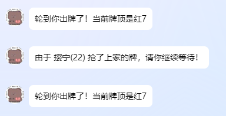
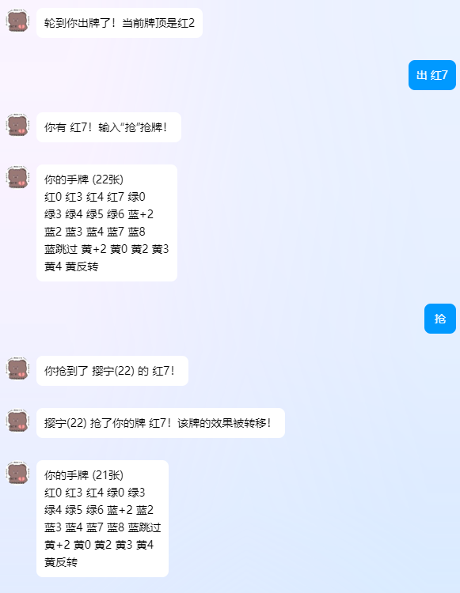
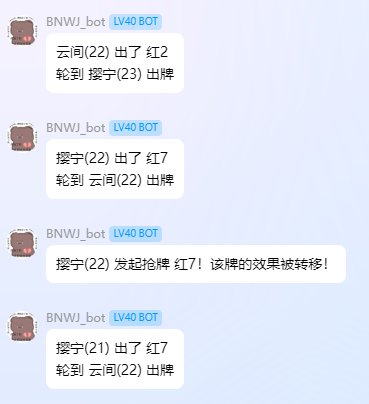

UNO游戏设计（IV）：增加功能：房间信息/喊话/部分抢牌
优化调整
当前状态的缺省值
虽然一般情况下先手玩家不会摸牌，但如果当前状态为空的时候摸牌，则会导致不能获取索引。因此，需要保证当前状态一直保持两个元素的状态：
self.now_stat: list[str] = ["空", ""]
|
另外，在试图重置now_stat时，也应重置成这样。
随时结束
输入一段指令人为结束。
end_game = on_command("结束uno")
@end_game.handle()
async def end_game_handle(bot: Bot, event: GroupMessageEvent):
group_id = event.group_id
if group_id in games:
del games[group_id]
await bot.send(event, "UNO游戏已结束！")
else:
await bot.send(event, "本群没有正在进行的UNO游戏！")
|
房间信息
前文提到，如果询问状态，可以展示当前的牌局状态，包括：
- 当前回合的玩家
- 牌局顺序以及座次
- 当前牌堆数和弃牌堆数
- 当前弃牌堆顶牌
- 各玩家的手牌数量
这些可以统称为房间信息。
只需要私聊或者群聊房间信息，即可展示这些。
所以只需要把已知的信息组织好并展示出即可：
room_info = on_command("房间信息")
@room_info.handle()
async def room_info_handle(bot: Bot, event: Event):
if isinstance(event, GroupMessageEvent):
group_id = event.group_id
game = games.get(group_id)
elif isinstance(event, PrivateMessageEvent):
user_id = event.user_id
for group_id_, game in games.items():
if game.game_started and user_id in game.playerids:
group_id = group_id_
break
else:
return
else:
return
if not game or not game.game_started:
return
player_indexs = list(range(len(game.players)))
current_player = game.players[game.current_player_index]
if game.direction == 1:
player_order = ' -> '.join([f"[{i}]{game.players[i]}({len(game.hands[i])})" for i in player_indexs[game.current_player_index:] + game.players[:game.current_player_index]])
else:
player_order = ' -> '.join([f"[{i}]{game.players[i]}({len(game.hands[i])})" for i in player_indexs[:game.current_player_index+1][::-1] + game.players[game.current_player_index+1:][::-1]])
deck_size = len(game.deck)
discard_pile_size = len(game.discard_pile)
top_discard = game.discard_pile[-1] if game.discard_pile else "无"
hand_sizes = ', '.join([f"[{i}]{player}({len(game.hands[i])})" for i, player in enumerate(game.players)])
info_message = (
f"【房间信息】\n"
f"当前回合玩家：[{game.current_player_index}]{current_player}({len(game.hands[game.current_player_index])})\n"
f"牌局顺序：{player_order}\n"
f"牌堆数：{deck_size}\n"
f"弃牌堆数：{discard_pile_size}\n"
f"当前弃牌堆顶牌：{top_discard}\n"
f"各玩家手牌数量：{hand_sizes}"
)
await bot.send(event, info_message)
|
指令帮助
help_command = on_command("uno帮助")
@help_command.handle()
async def help_command_handle(bot: Bot, event: Event):
help_message = (
"【UNO游戏指令】\n"
"1. 创建uno房间 - 创建一个新的UNO游戏房间\n"
"2. 加入uno房间 - 加入一个已创建的UNO游戏房间\n"
"3. 一起uno - 开始游戏\n"
"4. 出 <牌> - 出牌\n"
"5. 摸 - 摸牌\n"
"6. 抢 - 抢牌\n"
"7. 洗牌 - 重新洗牌\n"
"8. 结束uno - 结束当前UNO游戏\n"
"9. 喊 <玩家序号> <内容> - 对指定玩家喊话\n"
"10. 房间信息 - 查看当前房间信息\n"
"11. uno帮助 - 查看帮助信息"
)
await bot.send(event, help_message)
|
当然，随着后续指令变多，会不断更新。
喊话
喊话功能允许玩家在游戏中向其他玩家发送私信，通过机器人传达。且喊话功能有限制：
shout = on_command("喊")
@shout.handle()
async def shout_handle(bot: Bot, event: PrivateMessageEvent, message: Message = CommandArg()):
user_id = event.user_id
args = str(message).strip().split(maxsplit=1)
if len(args) != 2:
return
for group_id_, game in games.items():
if game.game_started and user_id in game.playerids:
group_id = group_id_
break
else:
return
try:
target_index = int(args[0])
content = args[1]
except ValueError as e:
await bot.send(event, "参数错误！")
return
if target_index < 0 or target_index >= len(game.playerids):
await bot.send(event, "玩家序号无效！")
return
if game.playerids.index(user_id) == target_index:
await bot.send(event, "不能对自己喊话！")
return
if game.shouted.get(user_id, False):
await bot.send(event, "你喊话太频繁了！下个回合再试试吧！")
return
target_id = game.playerids[target_index]
nickname = game.players[game.playerids.index(user_id)]
await bot.send_group_msg(group_id=group_id, message=f"{nickname}({len(game.hands[game.playerids.index(user_id)])}) 对 {game.players[target_index]}({len(game.hands[target_index])}) 喊了一句话！")
await bot.send_private_msg(user_id=target_id, message=f"{nickname}({len(game.hands[game.playerids.index(user_id)])}) 对你喊话：{content}")
await bot.send(event, "喊话成功！")
game.shouted[user_id] = True
game.save()
|
当然在self的变量里也要加入shouted，并且每次出牌和摸牌的时候都要重置喊话。
设置重置变量功能
因为在未来功能会越来越多，不仅仅有喊话，因此可以设置一个方法用来重置所有类似的变量。
def reset_vars(self):
self.shouted = {}
|
现在只有一个，未来可能越来越多。
部分抢牌
当局内出的牌和你的牌完全一样的时候，可以发动抢牌。在发动抢牌前，回合不会暂停，只有在下一个人出牌前才可以抢牌。当然，自己可以对自己抢牌，此时与连出两张牌无异。
为了让流程设计简单，当某玩家出了和你一样的牌的时候，会在私聊中自动询问你是否抢牌，只要在下一个人出牌前私聊发送了“抢”，就会自动抢夺该回合。当然，如果抢了牌，回合也会发生变化：该牌的效果转移到了你的下家。具体情况如下（定义被抢牌者为该玩家，抢牌者为你）：
- 数字牌：抢牌后只需要你的下家来接即可。
- 反转牌：抢牌后该玩家的反转失效，而你抢牌所得的反转应生效。例如：原顺序为正，该玩家打出后顺序为逆；你抢牌后先使该玩家的效果失效，变为正，你的效果又实施，变为逆。因此相当于总共改变一次方向即可。
- 跳过牌：抢牌后该玩家的跳过失效，你的下家被跳过，轮你的下下家进行回合。
- +2牌：累积不会中断，但是该玩家的+2所造成的累积失效。例如：上家出了+2，该玩家又出了+2累积到4张；你抢牌后，+2的累积不变，还是4张，但是需要你的下家接牌。
- ……
由于各个牌的效果复杂，所以一次性做完较为困难，故先行完成一部分，即部分抢牌。本次先完成数字牌的抢牌。所以设置一个是否可抢牌的逻辑，只有数字牌可抢：
def cannot_steal_card(self, card: str) -> bool:
"""
检查是否不可以抢牌
"""
if card[0] in ("红", "黄", "绿", "蓝") and card[1].isdigit():
return False
else:
return "不是数字牌！"
|
另外，在出牌处设置是否可抢的布尔变量为真。
if not game.cannot_steal_card(card):
await notify_steal_card(bot, game, card)
game.can_steal = True
|
可以看到抢牌一旦成功，大部分逻辑是与出牌相仿的。因此可以封装出牌的逻辑；另外，抢牌后会先使被抢玩家的效果失效，因此可以保留出牌后但生效前的效果，如果抢牌成功，直接将生效前的效果覆盖即可。如果逻辑封装较为完善，可以很轻松地完成全部抢牌的部分。
此处使用深拷贝，拷贝实例的字典对象的所有嵌套子元素，保证不随后续变化更改（注意引入copy库）：
saved_state = copy.deepcopy(game.__dict__)
game.saved_state = saved_state
|
将出牌的出口处的效果跟进部分封装成异步函数，对于抢牌也可使用。
async def play_card_process(bot: Bot, event: PrivateMessageEvent, game: UNO, card: str, user_id: int, group_id: int, nickname: str):
"""
处理UNO游戏中的出牌流程。
参数:
bot (Bot): 用于发送消息的机器人实例。
event (PrivateMessageEvent): 触发出牌的事件。
game (UNO): UNO游戏实例。
card (str): 被出的牌。
user_id (int): 出牌用户的ID。
group_id (int): 游戏所在群的ID。
nickname (str): 出牌用户的昵称。
返回:
None
"""
if card[1:] == "跳过":
old_index = game.current_player_index
game.current_player_index = (game.current_player_index + game.direction) % len(game.playerids)
new_index = game.current_player_index
await bot.send_group_msg(group_id=group_id, message=f"{nickname}({len(game.hands[game.playerids.index(user_id)])}) 出了 {card}\n{game.players[old_index]}({len(game.hands[old_index])}) 被跳过了，轮到 {game.players[new_index]}({len(game.hands[new_index])}) 出牌")
elif card[1:] == "反转":
game.direction *= -1
game.current_player_index = (game.playerids.index(user_id) + game.direction) % len(game.playerids)
await bot.send_group_msg(group_id=group_id, message=f"{nickname}({len(game.hands[game.playerids.index(user_id)])}) 出了 {card}\n方向已反转，轮到 {game.players[game.current_player_index]}({len(game.hands[game.current_player_index])}) 出牌")
elif card[1:] == "+2":
game.plus_2 = [game.current_player_index, game.plus_2[1]+2]
await bot.send_group_msg(group_id=group_id, message=f"{nickname}({len(game.hands[game.playerids.index(user_id)])}) 出了 {card}\n{game.players[game.current_player_index]}({len(game.hands[game.current_player_index])}) 选择被罚摸 {game.plus_2[1]} 张牌或继续叠加")
await bot.send_private_msg(user_id=game.playerids[game.current_player_index], message=f"轮到你出牌了！当前牌顶是{game.now_stat[0]}{game.now_stat[1]}\n你可以选择：\n- 输入“摸”，即决定摸 {game.plus_2[1]} 张牌；\n- 输入“出”命令以出牌继续叠加，需要出一张+2牌。")
await send_hand_cards(bot, game, user_id=user_id)
return
else:
await bot.send_group_msg(group_id=group_id, message=f"{nickname}({len(game.hands[game.playerids.index(user_id)])}) 出了 {card}\n轮到 {game.players[game.current_player_index]}({len(game.hands[game.current_player_index])}) 出牌")
await bot.send_private_msg(user_id=game.playerids[game.current_player_index], message=f"轮到你出牌了！当前牌顶是{game.now_stat[0]}{game.now_stat[1]}")
await send_hand_cards(bot, game, user_id=user_id)
|
在出牌的出口处以及抢牌的出口处使用await关键字唤起：
await play_card_process(bot, event, game, card, user_id, group_id, nickname)
|
接下来，在抢牌的环节，可以将保存的状态恢复。但恢复时要注意保存状态时的点位。查看出牌的流程（以下是出牌部分的节选）：
game = games.get(group_id)
nickname = game.players[game.playerids.index(user_id)]
cannot_play_reason = game.cannot_play_card(card, user_id)
if cannot_play_reason:
await bot.send(event, cannot_play_reason)
return
game.reset_vars()
game.hands[game.current_player_index].remove(card)
game.discard_pile.append(card)
game.update_now_stat(card)
game.save()
if not game.hands[game.current_player_index]:
await bot.send_group_msg(group_id=group_id, message=f"{nickname}({len(game.hands[game.playerids.index(user_id)])}) 出了 {card}\n{game.players[game.current_player_index]}({len(game.hands[game.current_player_index])}) 胜利！游戏结束！")
del games[group_id]
return
if not game.cannot_steal_card(card):
await notify_steal_card(bot, game, card)
game.can_steal = True
saved_state = copy.deepcopy(game.__dict__)
game.saved_state = saved_state
game.current_player_index = (game.current_player_index + game.direction) % len(game.playerids)
await play_card_process(bot, event, game, card, user_id, group_id, nickname)
|
顺序是：
- 出牌并放入弃牌堆
- 检查是否胜利，胜利即结束
- 设置允许抢牌
- 保存状态
- 切换到下家
- 出牌效果生效
保存当前状态恰好在一切设置完成但出牌效果又没有生效的时候。因此，恢复效果最好在抢牌者的牌出掉之前。
抢牌的顺序：
- 声明抢牌
- 恢复状态
- 出牌并放入弃牌堆
- 接正常出牌的流程……
这样就可以无缝衔接正常的流程。
其实，因为已经剥离出了出牌后效果的部分，理论上全部抢牌都可以实现（只要出牌实现了对应功能）；但是为了保险起见，在之前的过滤器中先仅允许数字牌抢牌。
首先是抢牌的基本流程：
steal_card = on_command("抢")
@steal_card.handle()
async def steal_card_handle(bot: Bot, event: PrivateMessageEvent, message: Message = CommandArg()):
user_id = event.user_id
for group_id_, game in games.items():
if game.game_started and user_id in game.playerids:
group_id = group_id_
break
else:
return
next_index = game.current_player_index
if user_id == game.playerids[next_index]:
await bot.send(event, "你是下家，无法抢牌！")
return
game = games.get(group_id)
nickname = game.players[game.playerids.index(user_id)]
if game.discard_pile[-1] in [card for card in game.hands[game.playerids.index(user_id)]] and game.can_steal:
|
如果满足这个条件，则就抢牌成功。此时需要第一时间先将可抢牌设为假。还有，因为抢牌必然是抢相同的牌，而且条件中也验证了该玩家有这个手牌，所以直接取弃牌堆顶的牌即可。紧接着只需要在群里声明抢牌，向被抢牌和抢牌的玩家各自发送私聊提示即可。
if game.discard_pile[-1] in [card for card in game.hands[game.playerids.index(user_id)]] and game.can_steal:
game.can_steal = False
card = game.discard_pile[-1]
await bot.send_group_msg(group_id=group_id, message=f"{nickname}({len(game.hands[game.playerids.index(user_id)])}) 发起抢牌 {card}！该牌的效果被转移！")
if game.saved_state:
game.restore_saved_state()
else:
await bot.send_group_msg(group_id=group_id, message="抢牌失败！前置状态未保存！（游戏需要紧急停止并调查错误）")
return
old_index = game.current_player_index
game.current_player_index = game.playerids.index(user_id)
new_index = game.current_player_index
time.sleep(0.2)
await bot.send_private_msg(user_id=game.playerids[new_index], message=f"你抢到了 {game.players[old_index]}({len(game.hands[old_index])}) 的 {card}！")
time.sleep(0.2)
await bot.send_private_msg(user_id=game.playerids[old_index], message=f"{nickname}({len(game.hands[new_index])}) 抢了你的牌 {card}！该牌的效果被转移！")
time.sleep(0.2)
await bot.send_private_msg(user_id=game.playerids[next_index], message=f"由于 {nickname}({len(game.hands[new_index])}) 抢了上家的牌，请你继续等待！")
|
现在你抢到了牌，需要将牌打出。此时只需要复制出牌流程即可。当然，如果事先做好了封装，这一步可以大大简化。
最终的抢牌流程为：
steal_card = on_command("抢")
@steal_card.handle()
async def steal_card_handle(bot: Bot, event: PrivateMessageEvent, message: Message = CommandArg()):
user_id = event.user_id
for group_id_, game in games.items():
if game.game_started and user_id in game.playerids:
group_id = group_id_
break
else:
return
next_index = game.current_player_index
if user_id == game.playerids[next_index]:
await bot.send(event, "你是下家，无法抢牌！")
return
game = games.get(group_id)
nickname = game.players[game.playerids.index(user_id)]
if game.discard_pile[-1] in [card for card in game.hands[game.playerids.index(user_id)]] and game.can_steal:
game.can_steal = False
card = game.discard_pile[-1]
await bot.send_group_msg(group_id=group_id, message=f"{nickname}({len(game.hands[game.playerids.index(user_id)])}) 发起抢牌 {card}！该牌的效果被转移！")
if game.saved_state:
game.restore_saved_state()
else:
await bot.send_group_msg(group_id=group_id, message="抢牌失败！前置状态未保存！（游戏需要紧急停止并调查错误）")
return
old_index = game.current_player_index
game.current_player_index = game.playerids.index(user_id)
new_index = game.current_player_index
time.sleep(0.2)
await bot.send_private_msg(user_id=game.playerids[new_index], message=f"你抢到了 {game.players[old_index]}({len(game.hands[old_index])}) 的 {card}！")
time.sleep(0.2)
await bot.send_private_msg(user_id=game.playerids[old_index], message=f"{nickname}({len(game.hands[new_index])}) 抢了你的牌 {card}！该牌的效果被转移！")
time.sleep(0.2)
await bot.send_private_msg(user_id=game.playerids[next_index], message=f"由于 {nickname}({len(game.hands[new_index])}) 抢了上家的牌，请你继续等待！")
else:
return
game.hands[game.current_player_index].remove(card)
game.discard_pile.append(card)
game.update_now_stat(card)
game.save()
if not game.hands[game.current_player_index]:
await bot.send_group_msg(group_id=group_id, message=f"{nickname}({len(game.hands[game.playerids.index(user_id)])}) 出了 {card}\n{game.players[game.current_player_index]}({len(game.hands[game.current_player_index])}) 胜利！游戏结束！")
del games[group_id]
return
game.current_player_index = (game.current_player_index + game.direction) % len(game.playerids)
await play_card_process(bot, event, game, card, user_id, group_id, nickname)
|
测试（因测试原因，摸了很多牌直到出现了相同的为止。图中展示了自己抢自己的情况）：

被抢牌者的下家收到提示

抢牌者收到提示

群聊公布